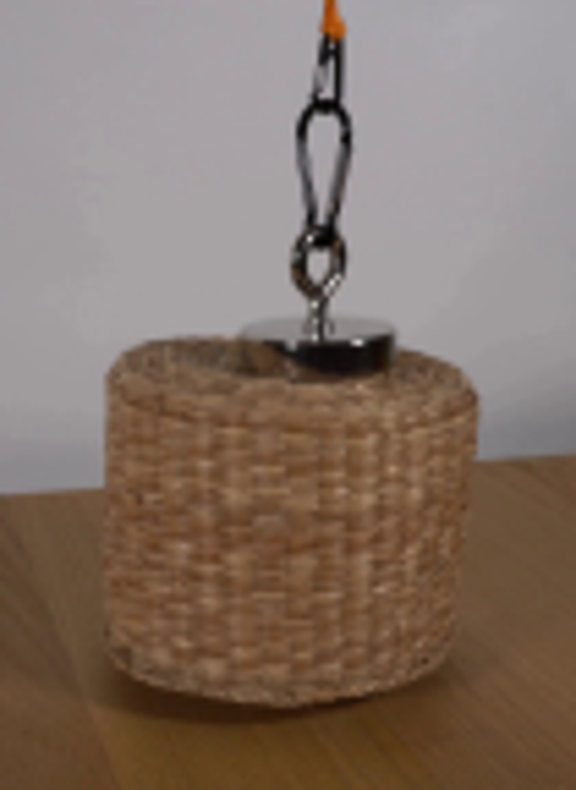
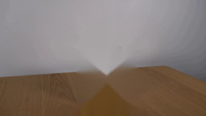
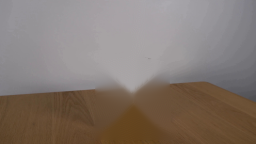
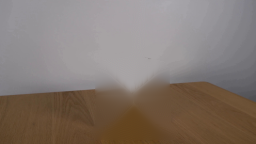
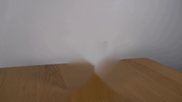
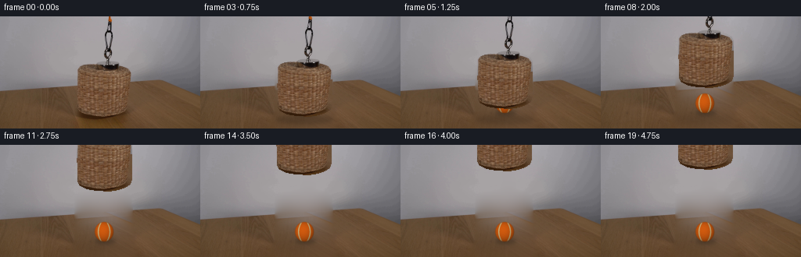
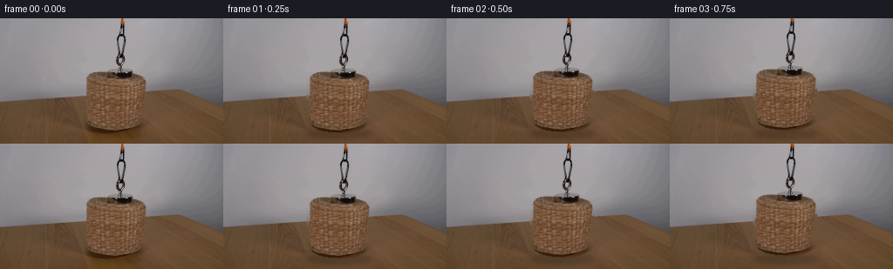
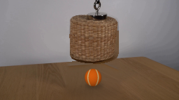
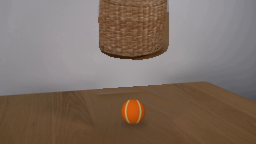

CODING AGENTS AS PIXEL WORLD MODELS
traex/GPT-5.6-Sol · 0169
点击播放 · 原生 RGB 像素
逐轮保存的候选
回放视频、检查图与代码变化。
每份候选均可单独播放。实际图片检查记录在下方工具轨迹中。
候选 01播放与检查图
点击播放 · 原生 RGB 像素

展开代码变化
--- 上一保存版本
+++ 本次保存版本
@@ -0,0 +1,176 @@
+from pathlib import Path
+import cv2
+import numpy as np
+from PIL import Image
+import artifact_io
+
+CASE = Path(__file__).resolve().parent
+SRC = np.asarray(Image.open(CASE / "first_frame.png").convert("RGB"), dtype=np.uint8)
+H, W = SRC.shape[:2]
+
+
+def foreground_alpha():
+ """Soft hand segmentation of the photographed hanging apparatus."""
+ m = np.zeros((H, W), np.uint8)
+ basket = np.array([
+ [98,70],[99,66],[104,63],[112,61],[126,60],[145,60],[158,62],
+ [165,65],[168,70],[168,116],[166,122],[160,126],[151,129],
+ [140,131],[123,130],[110,128],[102,124],[99,119]
+ ], np.int32)
+ cv2.fillPoly(m, [basket], 255)
+ # round black magnet, eyelet, carabiner, chain and orange rope
+ cv2.ellipse(m, (140,62), (16,7), 0, 0, 360, 255, -1)
+ # Dark/shiny hardware differs strongly from the neutral wall. Keep only that
+ # hardware within a conservative corridor so no rectangular wall patch moves.
+ rgb = SRC
+ gray = cv2.cvtColor(rgb, cv2.COLOR_RGB2GRAY)
+ corridor = np.zeros_like(m)
+ cv2.fillPoly(corridor, [np.array([[136,0],[143,0],[143,13],[147,19],[147,31],
+ [143,40],[146,47],[144,57],[137,62],[130,55],
+ [132,45],[135,38],[132,30],[133,18]], np.int32)], 255)
+ # Include dark metal, orange rope and bright specular pixels adjacent to metal.
+ orange = (rgb[:,:,0] > rgb[:,:,1] * 1.25) & (rgb[:,:,0] > rgb[:,:,2] * 1.45)
+ dark = gray < 113
+ seeds = ((dark | orange) & (corridor > 0)).astype(np.uint8) * 255
+ seeds = cv2.dilate(seeds, np.ones((3,3),np.uint8), iterations=1)
+ cv2.bitwise_or(m, cv2.bitwise_and(seeds, corridor), dst=m)
+ # Explicit narrow connector and highlights that thresholding can miss.
+ cv2.line(m, (140,50), (140,60), 255, 3, cv2.LINE_AA)
+ cv2.ellipse(m, (139,47), (5,8), 0, 0, 360, 255, 2, cv2.LINE_AA)
+ cv2.ellipse(m, (139,26), (5,12), 0, 0, 360, 255, 2, cv2.LINE_AA)
+ cv2.line(m, (140,0), (139,13), 255, 3, cv2.LINE_AA)
+ # Tiny feather retains the native camera softness while avoiding a cutout edge.
+ return cv2.GaussianBlur(m.astype(np.float32)/255.0, (3,3), 0.42)
+
+
+def clean_plate(alpha):
+ """Reconstruct wall/table behind the initially occluding apparatus."""
+ # Removal region intentionally contains the original contact shadow as well.
+ mask = np.zeros((H,W), np.uint8)
+ remove = np.array([[135,0],[145,0],[147,56],[161,60],[168,66],[171,121],
+ [178,136],[174,143],[91,143],[88,135],[96,118],[95,68],
+ [101,61],[126,57],[131,47],[129,28]], np.int32)
+ cv2.fillPoly(mask, [remove], 255)
+
+ # Navier-Stokes inpainting provides a useful color initialization. A constrained
+ # diffusion pass removes its characteristic star-shaped center artifact.
+ bgr = cv2.cvtColor(SRC, cv2.COLOR_RGB2BGR)
+ init = cv2.inpaint(bgr, mask, 7, cv2.INPAINT_NS)
+ plate = cv2.cvtColor(init, cv2.COLOR_BGR2RGB).astype(np.float32)
+ inside = mask.astype(bool)
+ for _ in range(420):
+ p = np.pad(plate, ((1,1),(1,1),(0,0)), mode='edge')
+ avg = (p[:-2,1:-1] + p[2:,1:-1] + p[1:-1,:-2] + p[1:-1,2:]) * .25
+ plate[inside] = avg[inside]
+
+ # Restore natural high-frequency wood grain below the receding rear edge.
+ smooth = cv2.GaussianBlur(SRC.astype(np.float32), (0,0), 3.2)
+ residual = SRC.astype(np.float32) - smooth
+ yy, xx = np.indices((H,W))
+ table_edge = 95.0 - 0.068*xx
+ table = yy >= table_edge
+ tex = np.zeros_like(plate)
+ # Texture donors from unobstructed wood on either side; crossfade at center.
+ xl = np.clip(xx-82, 0, W-1)
+ xr = np.clip(xx+82, 0, W-1)
+ rows = yy
+ leftres = residual[rows, xl]
+ rightres = residual[rows, xr]
+ blend = np.clip((xx-116)/34.0, 0, 1)[...,None]
+ tex = leftres*(1-blend) + rightres*blend
+ # Fade texture at mask boundaries and preserve plausible low contrast.
+ dist = cv2.distanceTransform(mask, cv2.DIST_L2, 3)
+ amount = np.clip(dist/5.0, 0, 1)[...,None]
+ use = (inside & table)[...,None]
+ plate = np.where(use, plate + tex*amount*0.62, plate)
+ return np.clip(plate,0,255).astype(np.uint8)
+
+
+def over(dst, src, a):
+ return np.clip(src.astype(np.float32)*a[...,None] + dst.astype(np.float32)*(1-a[...,None]),0,255).astype(np.uint8)
+
+
+def shadow_layer(base, lift):
+ # Basket's projected shadow softens and fades rapidly as its height increases.
+ a = np.zeros((H,W), np.uint8)
+ center_y = 132
+ axes = (36 + int(lift*.08), 6 + int(lift*.035))
+ cv2.ellipse(a, (133,center_y), axes, 0, 0, 360, int(80*np.exp(-lift/62.0)), -1)
+ sigma = 2.2 + lift*.045
+ a = cv2.GaussianBlur(a, (0,0), sigma).astype(np.float32)/255.0
+ dark = (base.astype(np.float32)*0.48).astype(np.uint8)
+ return over(base, dark, a)
+
+
+def tennis_ball_layer():
+ """A small photographic orange tennis ball resting where the basket covered it."""
+ S = 4
+ hh, ww = H*S, W*S
+ y,x = np.indices((hh,ww), dtype=np.float32)
+ cx,cy = 133.0*S, 111.5*S
+ rx,ry = 12.2*S, 12.8*S
+ nx=(x-cx)/rx; ny=(y-cy)/ry
+ r2=nx*nx+ny*ny
+ # Antialiased/fuzzy silhouette.
+ alpha=np.clip((1.035-np.sqrt(np.maximum(r2,0)))*10.0,0,1)
+ # Lit from upper-left, with orange felt and shaded lower-right edge.
+ lx,ly=-0.38,-0.55
+ sphere=np.sqrt(np.clip(1-r2,0,1))
+ light=np.clip(.54 + .34*sphere + .12*(-nx*.55-ny*.83), .28, 1.0)
+ col=np.zeros((hh,ww,3),np.float32)
+ col[:,:,0]=232*light
+ col[:,:,1]=101*light
+ col[:,:,2]=17*light
+ # Fine deterministic felt mottling.
+ noise=(np.sin(x*.77+y*1.31)+np.sin(x*1.91-y*.43)+np.sin(x*.21-y*2.17))*1.7
+ col += noise[...,None]
+ # Classic pale curved seam: two opposed arcs wrapping around the sphere.
+ seam1=np.abs(nx - (0.61 - .34*ny*ny))
+ seam2=np.abs(nx - (-0.61 + .34*ny*ny))
+ seam=((seam1 < .055) | (seam2 < .055)) & (r2<.96)
+ edge=((seam1 < .075) | (seam2 < .075)) & (r2<.98)
+ col[edge]=col[edge]*.55 + np.array([201,160,91],np.float32)*.45
+ col[seam]=np.array([226,199,139],np.float32)*light[seam,None]
+ col=np.clip(col,0,255).astype(np.uint8)
+ a8=np.clip(alpha*255,0,255).astype(np.uint8)
+ col=cv2.resize(col,(W,H),interpolation=cv2.INTER_AREA)
+ aa=cv2.resize(a8,(W,H),interpolation=cv2.INTER_AREA).astype(np.float32)/255.0
+ return col,aa
+
+
+def translate_layer(src, alpha, dx, dy):
+ M=np.float32([[1,0,dx],[0,1,dy]])
+ s=cv2.warpAffine(src,M,(W,H),flags=cv2.INTER_LINEAR,borderMode=cv2.BORDER_CONSTANT,borderValue=0)
+ a=cv2.warpAffine(alpha,M,(W,H),flags=cv2.INTER_LINEAR,borderMode=cv2.BORDER_CONSTANT,borderValue=0)
+ return s,a
+
+
+def generate():
+ fg_a=foreground_alpha()
+ plate=clean_plate(fg_a)
+ ball,ball_a=tennis_ball_layer()
+ # 4 fps: short observational pause, then a smooth hand-pulled lift and settle.
+ lifts=[0,0,1,3,7,13,21,30,40,51,62,72,81,88,93,96,98,99,100,100]
+ sway =[0,0,0,0,0,0,0,1,1,1,1,0,0,0,-1,-1,-1,0,0,0]
+ frames=[]
+ for i,(lift,dx) in enumerate(zip(lifts,sway)):
+ if i==0:
+ frames.append(SRC.copy())
+ continue
+ frame=shadow_layer(plate.copy(),lift)
+ # Ball contact shadow remains fixed on the tabletop.
+ sh=np.zeros((H,W),np.uint8)
+ cv2.ellipse(sh,(134,123),(13,4),0,0,360,95,-1)
+ sh=cv2.GaussianBlur(sh,(0,0),2.4).astype(np.float32)/255
+ frame=over(frame,(frame.astype(np.float32)*.44).astype(np.uint8),sh)
+ frame=over(frame,ball,ball_a)
+ moved,moved_a=translate_layer(SRC,fg_a,dx,-lift)
+ frame=over(frame,moved,moved_a)
+ frames.append(frame)
+ return np.stack(frames).astype(np.uint8)
+
+
+if __name__ == '__main__':
+ frames=generate()
+ assert np.array_equal(frames[0],SRC)
+ artifact_io.save(frames, CASE)
候选 02播放与检查图
点击播放 · 原生 RGB 像素
展开代码变化
--- 上一保存版本
+++ 本次保存版本
@@ -52,23 +52,37 @@
[101,61],[126,57],[131,47],[129,28]], np.int32)
cv2.fillPoly(mask, [remove], 255)
- # Navier-Stokes inpainting provides a useful color initialization. A constrained
- # diffusion pass removes its characteristic star-shaped center artifact.
- bgr = cv2.cvtColor(SRC, cv2.COLOR_RGB2BGR)
- init = cv2.inpaint(bgr, mask, 7, cv2.INPAINT_NS)
- plate = cv2.cvtColor(init, cv2.COLOR_BGR2RGB).astype(np.float32)
+ # Fill wall and tabletop independently. Generic inpainting would mix the pale
+ # wall with brown wood and produce a conspicuous bright fan. Nearest valid
+ # same-surface samples followed by edge-aware diffusion extends both planes.
+ from scipy.ndimage import distance_transform_edt
+ yy, xx = np.indices((H,W))
+ table_edge = 95.0 - 0.068*xx
+ table = yy >= table_edge
inside = mask.astype(bool)
- for _ in range(420):
+ plate = SRC.astype(np.float32).copy()
+ for surface in (table, ~table):
+ invalid = inside | (~surface)
+ _, nearest = distance_transform_edt(invalid, return_indices=True)
+ target = inside & surface
+ plate[target] = SRC[nearest[0][target], nearest[1][target]]
+ # Jacobi diffusion, but never across the rear edge of the tabletop.
+ for _ in range(260):
p = np.pad(plate, ((1,1),(1,1),(0,0)), mode='edge')
- avg = (p[:-2,1:-1] + p[2:,1:-1] + p[1:-1,:-2] + p[1:-1,2:]) * .25
+ c = np.pad(table, ((1,1),(1,1)), mode='edge')
+ acc = np.zeros_like(plate); count = np.zeros((H,W,1),np.float32)
+ for vals, ok in ((p[:-2,1:-1], c[:-2,1:-1]),
+ (p[2:,1:-1], c[2:,1:-1]),
+ (p[1:-1,:-2], c[1:-1,:-2]),
+ (p[1:-1,2:], c[1:-1,2:])):
+ same = (ok == table)[...,None]
+ acc += vals*same; count += same
+ avg = acc/np.maximum(count,1)
plate[inside] = avg[inside]
# Restore natural high-frequency wood grain below the receding rear edge.
smooth = cv2.GaussianBlur(SRC.astype(np.float32), (0,0), 3.2)
residual = SRC.astype(np.float32) - smooth
- yy, xx = np.indices((H,W))
- table_edge = 95.0 - 0.068*xx
- table = yy >= table_edge
tex = np.zeros_like(plate)
# Texture donors from unobstructed wood on either side; crossfade at center.
xl = np.clip(xx-82, 0, W-1)
候选 03播放与检查图
可观测工具轨迹
实际执行的命令与返回图片。
命令 1exit 0
/bin/bash -lc "cat prompt.txt && printf '\\n--- GENERATION RULES ---\\n' && cat GENERATION_RULES.md"
命令 2exit 0
/bin/bash -lc "find . -maxdepth 2 -type f -printf '%p\\n' | sort && printf '\\n--- binaries ---\\n' && command -v ffmpeg && command -v python3 && command -v blender || true"
命令 3exit 0
/bin/bash -lc "sed -n '1,240p' artifact_io.py && python3 - <<'PY'
from PIL import Image
import numpy as np
im=np.array(Image.open('first_frame.png'))
print(im.shape, im.dtype, im.min(), im.max())
try:
import cv2; print('cv2',cv2.__version__)
except Exception as e: print('no cv2',e)
try:
import scipy; print('scipy',scipy.__version__)
except Exception as e: print('no scipy',e)
PY"命令 4exit 0
/bin/bash -lc "python3 - <<'PY'
from PIL import Image
im=Image.open('first_frame.png')
im.crop((80,0,185,144)).resize((630,864)).save('.tmp/crop.png')
PY"命令 5exit 0
/bin/bash -lc "cat > .tmp/test_bg.py <<'PY'
import cv2, numpy as np
from PIL import Image
im=cv2.imread('first_frame.png')
h,w=im.shape[:2]
mask=np.zeros((h,w),np.uint8)
# broad removal region object+shadow
pts=np.array([[136,0],[144,0],[144,58],[163,61],[169,68],[170,123],[177,132],[174,139],[94,139],[91,132],[96,120],[95,68],[101,60],[129,57],[133,44],[131,31],[135,20]],np.int32)
cv2.fillPoly(mask,[pts],255)
# also chain area
cv2.line(mask,(140,0),(136,62),255,10)
for r in [3,7,12]:
out=cv2.inpaint(im,mask,r,cv2.INPAINT_TELEA)
cv2.imwrite(f'.tmp/bg{r}.png',out)
cv2.imwrite('.tmp/mask.png',mask)
PY
python3 .tmp/test_bg.py"命令 6exit 0
/bin/bash -lc "python3 - <<'PY'
exec(open('.tmp/test_bg.py').read().split('for r')[0])
for r in [3,7,12]:
out=cv2.inpaint(im,mask,r,cv2.INPAINT_NS); cv2.imwrite(f'.tmp/ns{r}.png',out)
PY"命令 7exit 0
/bin/bash -lc "cat > generate.py <<'PY'
from pathlib import Path
import cv2
import numpy as np
from PIL import Image
import artifact_io
CASE = Path(__file__).resolve().parent
SRC = np.asarray(Image.open(CASE / \"first_frame.png\").convert(\"RGB\"), dtype=np.uint8)
H, W = SRC.shape[:2]
def foreground_alpha():
\"\"\"Soft hand segmentation of the photographed hanging apparatus.\"\"\"
m = np.zeros((H, W), np.uint8)
basket = np.array([
[98,70],[99,66],[104,63],[112,61],[126,60],[145,60],[158,62],
[165,65],[168,70],[168,116],[166,122],[160,126],[151,129],
[140,131],[123,130],[110,128],[102,124],[99,119]
], np.int32)
cv2.fillPoly(m, [basket], 255)
# round black magnet, eyelet, carabiner, chain and orange rope
cv2.ellipse(m, (140,62), (16,7), 0, 0, 360, 255, -1)
# Dark/shiny hardware differs strongly from the neutral wall. Keep only that
# hardware within a conservative corridor so no rectangular wall patch moves.
rgb = SRC
gray = cv2.cvtColor(rgb, cv2.COLOR_RGB2GRAY)
corridor = np.zeros_like(m)
cv2.fillPoly(corridor, [np.array([[136,0],[143,0],[143,13],[147,19],[147,31],
[143,40],[146,47],[144,57],[137,62],[130,55],
[132,45],[135,38],[132,30],[133,18]], np.int32)], 255)
# Include dark metal, orange rope and bright specular pixels adjacent to metal.
orange = (rgb[:,:,0] > rgb[:,:,1] * 1.25) & (rgb[:,:,0] > rgb[:,:,2] * 1.45)
dark = gray < 113
seeds = ((dark | orange) & (corridor > 0)).astype(np.uint8) * 255
seeds = cv2.dilate(seeds, np.ones((3,3),np.uint8), iterations=1)
cv2.bitwise_or(m, cv2.bitwise_and(seeds, corridor), dst=m)
# Explicit narrow connector and highlights that thresholding can miss.
cv2.line(m, (140,50), (140,60), 255, 3, cv2.LINE_AA)
cv2.ellipse(m, (139,47), (5,8), 0, 0, 360, 255, 2, cv2.LINE_AA)
cv2.ellipse(m, (139,26), (5,12), 0, 0, 360, 255, 2, cv2.LINE_AA)
cv2.line(m, (140,0), (139,13), 255, 3, cv2.LINE_AA)
# Tiny feather retains the native camera softness while avoiding a cutout edge.
return cv2.GaussianBlur(m.astype(np.float32)/255.0, (3,3), 0.42)
def clean_plate(alpha):
\"\"\"Reconstruct wall/table behind the initially occluding apparatus.\"\"\"
# Removal region intentionally contains the original contact shadow as well.
mask = np.zeros((H,W), np.uint8)
remove = np.array([[135,0],[145,0],[147,56],[161,60],[168,66],[171,121],
[178,136],[174,143],[91,143],[88,135],[96,118],[95,68],
[101,61],[126,57],[131,47],[129,28]], np.int32)
cv2.fillPoly(mask, [remove], 255)
# Navier-Stokes inpainting provides a useful color initialization. A constrained
# diffusion pass removes its characteristic star-shaped center artifact.
bgr = cv2.cvtColor(SRC, cv2.COLOR_RGB2BGR)
init = cv2.inpaint(bgr, mask, 7, cv2.INPAINT_NS)
plate = cv2.cvtColor(init, cv2.COLOR_BGR2RGB).astype(np.float32)
inside = mask.astype(bool)
for _ in range(420):
p = np.pad(plate, ((1,1),(1,1),(0,0)), mode='edge')
avg = (p[:-2,1:-1] + p[2:,1:-1] + p[1:-1,:-2] + p[1:-1,2:]) * .25
plate[inside] = avg[inside]
# Restore natural high-frequency wood grain below the receding rear edge.
smooth = cv2.GaussianBlur(SRC.astype(np.float32), (0,0), 3.2)
residual = SRC.astype(np.float32) - smooth
yy, xx = np.indices((H,W))
table_edge = 95.0 - 0.068*xx
table = yy >= table_edge
tex = np.zeros_like(plate)
# Texture donors from unobstructed wood on either side; crossfade at center.
xl = np.clip(xx-82, 0, W-1)
xr = np.clip(xx+82, 0, W-1)
rows = yy
leftres = residual[rows, xl]
rightres = residual[rows, xr]
blend = np.clip((xx-116)/34.0, 0, 1)[...,None]
tex = leftres*(1-blend) + rightres*blend
# Fade texture at mask boundaries and preserve plausible low contrast.
dist = cv2.distanceTransform(mask, cv2.DIST_L2, 3)
amount = np.clip(dist/5.0, 0, 1)[...,None]
use = (inside & table)[...,None]
plate = np.where(use, plate + tex*amount*0.62, plate)
return np.clip(plate,0,255).astype(np.uint8)
def over(dst, src, a):
return np.clip(src.astype(np.float32)*a[...,None] + dst.astype(np.float32)*(1-a[...,None]),0,255).astype(np.uint8)
def shadow_layer(base, lift):
# Basket's projected shadow softens and fades rapidly as its height increases.
a = np.zeros((H,W), np.uint8)
center_y = 132
axes = (36 + int(lift*.08), 6 + int(lift*.035))
cv2.ellipse(a, (133,center_y), axes, 0, 0, 360, int(80*np.exp(-lift/62.0)), -1)
sigma = 2.2 + lift*.045
a = cv2.GaussianBlur(a, (0,0), sigma).astype(np.float32)/255.0
dark = (base.astype(np.float32)*0.48).astype(np.uint8)
return over(base, dark, a)
def tennis_ball_layer():
\"\"\"A small photographic orange tennis ball resting where the basket covered it.\"\"\"
S = 4
hh, ww = H*S, W*S
y,x = np.indices((hh,ww), dtype=np.float32)
cx,cy = 133.0*S, 111.5*S
rx,ry = 12.2*S, 12.8*S
nx=(x-cx)/rx; ny=(y-cy)/ry
r2=nx*nx+ny*ny
# Antialiased/fuzzy silhouette.
alpha=np.clip((1.035-np.sqrt(np.maximum(r2,0)))*10.0,0,1)
# Lit from upper-left, with orange felt and shaded lower-right edge.
lx,ly=-0.38,-0.55
sphere=np.sqrt(np.clip(1-r2,0,1))
light=np.clip(.54 + .34*sphere + .12*(-nx*.55-ny*.83), .28, 1.0)
col=np.zeros((hh,ww,3),np.float32)
col[:,:,0]=232*light
col[:,:,1]=101*light
col[:,:,2]=17*light
# Fine deterministic felt mottling.
noise=(np.sin(x*.77+y*1.31)+np.sin(x*1.91-y*.43)+np.sin(x*.21-y*2.17))*1.7
col += noise[...,None]
# Classic pale curved seam: two opposed arcs wrapping around the sphere.
seam1=np.abs(nx - (0.61 - .34*ny*ny))
seam2=np.abs(nx - (-0.61 + .34*ny*ny))
seam=((seam1 < .055) | (seam2 < .055)) & (r2<.96)
edge=((seam1 < .075) | (seam2 < .075)) & (r2<.98)
col[edge]=col[edge]*.55 + np.array([201,160,91],np.float32)*.45
col[seam]=np.array([226,199,139],np.float32)*light[seam,None]
col=np.clip(col,0,255).astype(np.uint8)
a8=np.clip(alpha*255,0,255).astype(np.uint8)
col=cv2.resize(col,(W,H),interpolation=cv2.INTER_AREA)
aa=cv2.resize(a8,(W,H),interpolation=cv2.INTER_AREA).astype(np.float32)/255.0
return col,aa
def translate_layer(src, alpha, dx, dy):
M=np.float32([[1,0,dx],[0,1,dy]])
s=cv2.warpAffine(src,M,(W,H),flags=cv2.INTER_LINEAR,borderMode=cv2.BORDER_CONSTANT,borderValue=0)
a=cv2.warpAffine(alpha,M,(W,H),flags=cv2.INTER_LINEAR,borderMode=cv2.BORDER_CONSTANT,borderValue=0)
return s,a
def generate():
fg_a=foreground_alpha()
plate=clean_plate(fg_a)
ball,ball_a=tennis_ball_layer()
# 4 fps: short observational pause, then a smooth hand-pulled lift and settle.
lifts=[0,0,1,3,7,13,21,30,40,51,62,72,81,88,93,96,98,99,100,100]
sway =[0,0,0,0,0,0,0,1,1,1,1,0,0,0,-1,-1,-1,0,0,0]
frames=[]
for i,(lift,dx) in enumerate(zip(lifts,sway)):
if i==0:
frames.append(SRC.copy())
continue
frame=shadow_layer(plate.copy(),lift)
# Ball contact shadow remains fixed on the tabletop.
sh=np.zeros((H,W),np.uint8)
cv2.ellipse(sh,(134,123),(13,4),0,0,360,95,-1)
sh=cv2.GaussianBlur(sh,(0,0),2.4).astype(np.float32)/255
frame=over(frame,(frame.astype(np.float32)*.44).astype(np.uint8),sh)
frame=over(frame,ball,ball_a)
moved,moved_a=translate_layer(SRC,fg_a,dx,-lift)
frame=over(frame,moved,moved_a)
frames.append(frame)
return np.stack(frames).astype(np.uint8)
if __name__ == '__main__':
frames=generate()
assert np.array_equal(frames[0],SRC)
artifact_io.save(frames, CASE)
PY
python3 generate.py
python3 - <<'PY'
from PIL import Image
import numpy as np
f=np.array(Image.open('frames/00.png')); s=np.array(Image.open('first_frame.png'))
print('frame0 exact:',np.array_equal(f,s),'shape',f.shape)
PY"命令 8exit 0
/bin/bash -lc 'python3 generate.py'
命令 9exit 0
/bin/bash -lc "python3 - <<'PY'
from pathlib import Path
from PIL import Image
import numpy as np
z=np.load('pixels.npz')['pixels']
imgs=[]
for p in sorted(Path('frames').glob('*.png')):
a=np.asarray(Image.open(p))
imgs.append(a)
a=np.stack(imgs)
s=np.asarray(Image.open('first_frame.png').convert('RGB'))
print('frames:',len(imgs),'array:',a.shape,a.dtype)
print('pixel tensor:',z.shape,z.dtype)
print('frame00 exact:',np.array_equal(a[0],s))
print('all RGB:',all(Image.open(p).mode=='RGB' for p in sorted(Path('frames').glob('*.png'))))
print('outputs:',[(p.name,p.stat().st_size) for p in map(Path,['pixels.npz','index.html','inspection.png','generate.py'])])
PY"视觉工具实际返回图片 1

视觉工具实际返回图片 2

视觉工具实际返回图片 3

视觉工具实际返回图片 4

视觉工具实际返回图片 5

视觉工具实际返回图片 6

视觉工具实际返回图片 7

视觉工具实际返回图片 8

视觉工具实际返回图片 9

视觉工具实际返回图片 10

视觉工具实际返回图片 11

保存候选 3 份；完成命令 9 次；可验证图片返回 11 张。原始 API 响应与完整日志保留在本地。